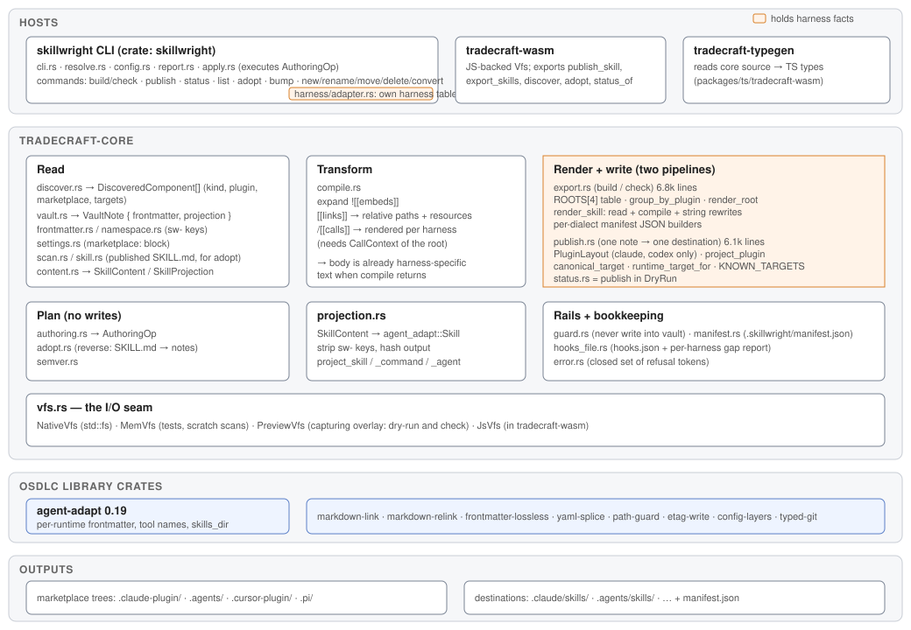
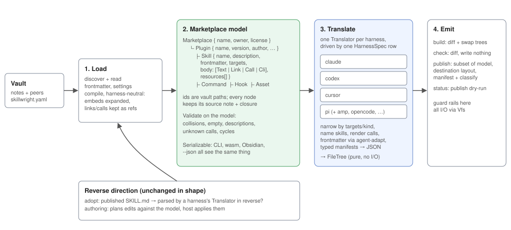

skillwright architecture: build a marketplace model, then translate it per harness?
How skillwright is built today (structure and the build, check and publish flows), where the harness knowledge sits, and whether to move to a load → model → translate → emit pipeline.
Your proposal: build a data representation of the whole marketplace first, then emit it through a translator per harness.
Today there is no marketplace model. build/check (export.rs) and publish (publish.rs) are two separate pipelines. Each one reads notes, compiles them and writes bytes in one pass, and each pass already knows which harness it is writing for. The only grouping is PluginGroup: borrowed lists of discovered notes, with no compiled content in them.
Why it matters now: adding a harness or a component kind means editing both pipelines and about five separate tables of harness facts. publish can only write a plugin for Claude and Codex, while build supports four harnesses. That gap is a symptom of the split.
Constraints any answer has to keep: - The core stays I/O-free above Vfs, so it still runs as wasm (Obsidian, TS). - check must never disagree with build. Today that holds because both render into a PreviewVfs. - Refusal tokens and the byte-for-byte output of the committed plugin/ trees must not change. CI diffs them. - The sw- strip and the rail against writing into the vault both stay.
Files read: tradecraft-core/src/{lib,export,publish,compile,projection,discover,vault,content,frontmatter,vfs,authoring,status,manifest,guard}.rs, skillwright/src/{cli,lib}.rs, skillwright/src/commands/*, tradecraft-wasm/src/lib.rs, plugin/skillwright.yaml.
Structure today

Layers and modules
Layers and modules
The core is cleanly layered on its inputs. Discover/vault/frontmatter all read into typed structs, and authoring already uses decide-then-execute: it returns an AuthoringOp and the host applies it. The output side has no such split. export and publish decide what to write and write it in the same function.
- skillwright (CLI)Lines (incl. tests): 7,600
More on skillwright (CLI)
skillwright (CLI)
Flags → request → one core call → report.
commands/harness/adapter.rsholds a separate harness table for the install/update CLIs. - tradecraft-coreLines (incl. tests): 37,700
Fold tradecraft-core
- export.rs: build / checkLines (incl. tests): 6,848
- publish.rs: one note → one destinationLines (incl. tests): 6,117
- compile.rs: embeds, links, callsLines (incl. tests): 3,918
- adopt.rs: SKILL.md → notesLines (incl. tests): 3,106
- discover.rs: publishable notesLines (incl. tests): 2,428
- authoring.rs: plansLines (incl. tests): 2,341
- frontmatter.rsLines (incl. tests): 1,878
- vfs.rs: I/O seamLines (incl. tests): 1,686
- projection.rs: → agent-adaptLines (incl. tests): 1,130
- tradecraft-wasmLines (incl. tests): 1,147
- tradecraft-typegenLines (incl. tests): 1,518
Flows today
Mermaid source
flowchart TD
n0(["1. Resolve config"])
n1["2. Rail"]
n2["3. discover_components"]
n3["4. Filter + split"]
n4["5. group_by_plugin"]
n5["6. render_root (×4)"]
n6["7. render_skill"]
n7["8. Manifests"]
n8["9. diff_root"]
n9{"10. Mode?"}
n10(["11. Report drift"])
n11(["12. commit"])
n0 --> n1
n1 --> n2
n2 --> n3
n3 --> n4
n4 --> n5
n5 --> n6
n6 --> n7
n7 --> n8
n8 --> n9
n9 -- check --> n10
n9 -- build --> n11
subgraph l0 [CLI]
n0
end
subgraph l1 [Core: read + group]
n1 & n2 & n3 & n4
end
subgraph l2 [Core: render, once per harness root]
n5 & n6 & n7
end
subgraph l3 [Core: diff + commit]
n8 & n9 & n10 & n11
end1Resolve configskillwright.yaml + flags → ExportRequest.
1. Resolve config
2RailRefuse an out root that would swap a tree inside the vault.
2. Rail
3discover_componentsWalk the vault → DiscoveredComponent[]. Refuse if any note was unreadable.
3. discover_components
4Filter + splitBy marketplace, then into skills / commands / hooks. Refuse empty or undescribed.
4. Filter + split
5group_by_pluginPluginGroup = borrowed refs per plugin. The closest thing to a model.
5. group_by_plugin
Lines 1412-1486 (75 lines)
1412fn group_by_plugin<'a>(1413 skills: &[&'a DiscoveredComponent],1414 commands: &[&'a DiscoveredComponent],1415 hooks: &[&'a DiscoveredComponent],1416 default_plugin: &'a str,1417) -> Result<BTreeMap<&'a str, PluginGroup<'a>>, CoreError> {1418 // Which list a member of each kind joins. The collision check is per1419 // kind, not across kinds: the three render into disjoint subtrees, so a1420 // skill and a command of one name are two directories, not one.1421 type Pick<'a> = for<'g> fn(&'g mut PluginGroup<'a>) -> &'g mut Vec<&'a DiscoveredComponent>;1422 let kinds: [(&[&'a DiscoveredComponent], Pick<'a>); 3] = [1423 (skills, |group| &mut group.skills),1424 (commands, |group| &mut group.commands),1425 (hooks, |group| &mut group.hooks),1426 ];14271428 let mut groups: BTreeMap<&str, PluginGroup> = BTreeMap::new();1429 for (members, pick) in kinds {1430 for member in members {1431 let plugin = member.plugin.as_deref().unwrap_or(default_plugin);1432 let siblings = pick(groups.entry(plugin).or_default());1433 if let Some(first) = siblings.iter().find(|m| m.name == member.name) {1434 return Err(CoreError::refused(1435 "path-collision",1436 format!(1437 "`{}` and `{}` both render as {} `{}` of plugin `{plugin}` — two \1438 components cannot publish onto one directory",1439 first.vault_relative_path,1440 member.vault_relative_path,1441 member.kind.as_str(),1442 member.name1443 ),1444 ));1445 }1446 siblings.push(member);1447 }1448 }1449 Ok(groups)1450}14511452/// One plugin's members in a marketplace tree, by kind.1453///1454/// The three kinds stay separate lists because they render into disjoint1455/// subtrees (`skills/`, `commands/`, `hooks/`) and only skills feed the1456/// plugin manifest's `Skills: …` wording. They share one group per plugin so1457/// "which plugins does the vault hold" is answered once, not by each consumer1458/// unioning three key sets.1459#[derive(Default)]1460struct PluginGroup<'a> {1461 skills: Vec<&'a DiscoveredComponent>,1462 commands: Vec<&'a DiscoveredComponent>,1463 hooks: Vec<&'a DiscoveredComponent>,1464}14651466impl<'a> PluginGroup<'a> {1467 /// What one root takes from this plugin. The admission rule is1468 /// [`admits`]'s; this is the one place it is applied per root, so the1469 /// render, the diff and the marketplace manifest cannot disagree about1470 /// which members a root carries.1471 fn admitted(&self, spec: &RootSpec) -> Admitted<'a> {1472 let narrow = |members: &[&'a DiscoveredComponent]| -> Vec<&'a DiscoveredComponent> {1473 members1474 .iter()1475 .copied()1476 .filter(|member| admits(member, spec))1477 .collect()1478 };1479 Admitted {1480 skills: narrow(&self.skills),1481 commands: narrow(&self.commands),1482 hooks: narrow(&self.hooks),1483 }1484 }1485}1486
6render_root (×4)A fresh PreviewVfs per root: claude, codex, cursor, pi.
6. render_root (×4)
Lines 1575-1684 (110 lines)
1575fn render_root(1576 vfs: &dyn Vfs,1577 inputs: &RenderInputs<'_>,1578 base: &Path,1579 spec: &RootSpec,1580) -> Result<Vec<DiscoveryWarning>, CoreError> {1581 let runtime = parse_runtime_target(spec.runtime)?;1582 let render = |skill: &IndexedSkill| match &skill.plugin {1583 Some(plugin) => rendered_skill_call(runtime, spec.naming, plugin, &skill.name),1584 None => checked_skill_call(runtime, None, &skill.name),1585 };1586 // Every skill in the marketplace, under the plugin it ships in, so a call1587 // to one this root narrows away is refused rather than rendered.1588 let skills = SkillIndex::new(inputs.groups.iter().flat_map(|(plugin, group)| {1589 let admitted: BTreeSet<&Path> = group1590 .admitted(spec)1591 .skills1592 .iter()1593 .map(|skill| skill.entry_path.as_path())1594 .collect();1595 group.skills.iter().map(move |skill| IndexedSkill {1596 entry_path: skill.entry_path.clone(),1597 plugin: Some((*plugin).to_owned()),1598 name: skill.name.clone(),1599 shipped: admitted.contains(skill.entry_path.as_path()),1600 })1601 }));1602 let calls = CallContext {1603 skills: SkillSource::ready(&skills),1604 render: &render,1605 target: spec.name,1606 implicit: true,1607 warnings: RefCell::new(Vec::new()),1608 };1609 for (plugin, group) in inputs.groups {1610 let admitted = group.admitted(spec);1611 if admitted.is_empty() {1612 continue;1613 }1614 let plugin_base = base.join(spec.packs).join(*plugin);1615 // The shim's only job is finding this plugin's own launcher asset at1616 // `inputs.config.shim_target`, so it can exist at all only where that1617 // asset does. A plugin that never declares one (every plugin in the1618 // repo-root vault, today) gets `None` here regardless of root — this1619 // stays invisible to a build that has no use for it, which is what1620 // keeps existing plugins that never declare a shim target unchanged. Whether a given1621 // root actually emits the shim for a given skill is a second,1622 // per-skill decision inside `render_skill`: `spec.cli_invocation`1623 // gates it by harness, and the skill's own compiled body gates it by1624 // whether that skill calls the CLI at all.1625 let shim_target = inputs1626 .assets1627 .get(plugin)1628 .is_some_and(|assets| assets.iter().any(|a| a.dest == inputs.config.shim_target))1629 .then_some(inputs.config.shim_target.as_str());1630 let siblings: BTreeSet<&str> = group.skills.iter().map(|s| s.name.as_str()).collect();1631 for skill in &admitted.skills {1632 render_skill(1633 vfs,1634 inputs.vault_root,1635 &plugin_base,1636 spec,1637 SkillMember {1638 plugin,1639 skill,1640 siblings: &siblings,1641 calls: &calls,1642 },1643 inputs.ns,1644 shim_target,1645 )?;1646 }1647 for command in &admitted.commands {1648 render_command_for_root(1649 vfs,1650 inputs.vault_root,1651 &plugin_base,1652 spec,1653 command,1654 &calls,1655 inputs.ns,1656 )?;1657 }1658 let wrote_hooks = render_hooks_for_root(1659 vfs,1660 &plugin_base,1661 spec,1662 &admitted.hooks,1663 inputs.hook_files.get(*plugin),1664 inputs.ns,1665 )?;1666 for asset in inputs.assets.get(plugin).into_iter().flatten() {1667 render_asset(vfs, &plugin_base, asset)?;1668 }1669 let manifest = plugin_manifest(spec, plugin, &admitted.skills, inputs.config, wrote_hooks);1670 write_rendered(1671 vfs,1672 &plugin_base.join(spec.plugin_manifest),1673 manifest.as_bytes(),1674 false,1675 )?;1676 }1677 if let Some(path) = spec.marketplace_manifest {1678 let manifest = marketplace_manifest(spec, inputs.groups, inputs.name, inputs.config);1679 write_rendered(vfs, &base.join(path), manifest.as_bytes(), false)?;1680 }1681 Ok(calls.warnings.into_inner())1682}16831684/// One skill as a pack renders it: the plugin it ships in, and how its
7render_skillReads and compiles the note again for this root, rewrites strings, projects via agent-adapt.
7. render_skill
read_vault_skill and compile_projection run once per root, because a call's spelling (/plugin:skill vs plugin-skill) and the set of shipped skills differ per root. The CLI-shim rewrite, the sibling-path rewrite and the generated marker are string edits on the compiled body.
Lines 1706-1806 (101 lines)
1706fn render_skill(1707 vfs: &dyn Vfs,1708 vault_root: &Path,1709 plugin_base: &Path,1710 spec: &RootSpec,1711 member: SkillMember<'_>,1712 ns: &Namespace,1713 shim_target: Option<&str>,1714) -> Result<(), CoreError> {1715 let skill = member.skill;1716 let published = published_skill_name(spec.naming, member.plugin, &skill.name)?;1717 let note = read_vault_skill(vfs, &skill.entry_path, ns)?;1718 let mut projection = note.projection;1719 projection.content.name = published.clone();1720 // Every root this function renders through is a skill layout — see the1721 // module doc — so no kind gate is needed the way `publish::publish_onto`1722 // has one for a command.1723 projection1724 .content1725 .apply_arguments(¬e.frontmatter.arguments);1726 compile_projection(1727 vfs,1728 &CompileSource {1729 vault_root,1730 entry_path: &skill.entry_path,1731 bundle_root: skill.bundle_root.as_deref(),1732 skill_name: &skill.name,1733 calls: Some(member.calls),1734 },1735 &mut projection,1736 )?;1737 // The vault writes every CLI call site as `${CLAUDE_PLUGIN_ROOT}/<shim_target>`1738 // — right for Claude, which substitutes that token itself, but dead text1739 // for a root whose harness has no such substitution (see1740 // `CliInvocation`). `used_shim` is whether this skill's own body actually1741 // contained the call site: it is what decides, below, whether this skill1742 // gets the `scripts/sdlc` shim file at all — a Codex/Cursor skill that1743 // never calls the CLI has nothing for the shim to serve.1744 let mut used_shim = false;1745 if spec.cli_invocation == CliInvocation::SkillRelativeShim1746 && let Some(target) = shim_target1747 {1748 let (rewritten, rewrote) = rewrite_cli_invocation(&projection.content.body, target);1749 projection.content.body = rewritten;1750 used_shim = rewrote;1751 }1752 if spec.naming == SkillNaming::PluginPrefixed {1753 projection.content.body =1754 rewrite_sibling_paths(&projection.content.body, member.plugin, member.siblings);1755 }1756 // The provenance marker, after compilation (and the CLI-invocation1757 // rewrite above) so the validator has already ruled on the body it1758 // annotates. A comment, so every harness ignores it.1759 projection.content.body = format!(1760 "{GENERATED_MARKER}{}; do not edit. -->\n\n{}",1761 skill.vault_relative_path, projection.content.body1762 );17631764 let files = project_skill(&projection, &[spec.runtime.to_owned()], ns)?;1765 let strip = format!("{}/{published}/", spec.projection_prefix);1766 for file in files {1767 let relative = file.relative_path.strip_prefix(&strip).ok_or_else(|| {1768 CoreError::Projection(format!(1769 "{}: `{}` did not land under `{strip}` — the {} projection moved its layout",1770 skill.name, file.relative_path, spec.runtime1771 ))1772 })?;1773 let destination = plugin_base.join("skills").join(&published).join(relative);1774 write_rendered(vfs, &destination, &file.content, file.executable)?;1775 }1776 // Emitted only where the rewrite above actually happened: a root not1777 // configured for `SkillRelativeShim` (Claude) never needs the shim at1778 // all, and a skill whose body never called the CLI has nothing pointing1779 // at it either way. `used_shim` implies `shim_target` was `Some` — the1780 // rewrite above only sets it inside that branch.1781 if used_shim {1782 let target = shim_target.expect("used_shim is only set when shim_target is Some");1783 write_rendered(1784 vfs,1785 &plugin_base1786 .join("skills")1787 .join(&published)1788 .join(SHIM_RELATIVE_PATH),1789 sdlc_shim_script(target).as_bytes(),1790 true,1791 )?;1792 }1793 Ok(())1794}17951796/// Rewrites every literal `${CLAUDE_PLUGIN_ROOT}/<shim_target>` call site in1797/// a compiled skill body to [`SHIM_RELATIVE_PATH`], for a root whose harness1798/// has no `${CLAUDE_PLUGIN_ROOT}` substitution of its own (see1799/// [`CliInvocation::SkillRelativeShim`]). Returns the rewritten body and1800/// whether any rewrite happened — the signal [`render_skill`] uses to decide1801/// whether this skill needs the shim file at all.1802///1803/// A match only counts when the character right after `shim_target` cannot1804/// continue the same path or filename — so `${CLAUDE_PLUGIN_ROOT}/cli/sdlc.js`1805/// (the bundled entry the launcher itself execs, a real citation in some1806/// skill prose) is left untouched rather than truncated into
8Manifestsplugin_manifest + per-dialect marketplace JSON builders.
8. Manifests
Lines 2946-3065 (313 lines)
2946pub fn render_plugin_manifest(2947 dialect: PluginDialect,2948 plugin: &str,2949 members: &[&DiscoveredComponent],2950 config: &MarketplaceConfig,2951 hooks: Option<&str>,2952) -> String {2953 if dialect == PluginDialect::Pi {2954 return pi_package_manifest(plugin, members, config);2955 }2956 #[derive(Serialize)]2957 #[serde(rename_all = "camelCase")]2958 struct Interface {2959 display_name: String,2960 category: String,2961 }2962 #[derive(Serialize)]2963 struct Manifest<'a> {2964 name: String,2965 version: String,2966 description: String,2967 #[serde(skip_serializing_if = "Option::is_none")]2968 author: Option<serde_json::Value>,2969 license: String,2970 keywords: Vec<String>,2971 skills: &'static str,2972 #[serde(skip_serializing_if = "Option::is_none")]2973 hooks: Option<&'a str>,2974 #[serde(skip_serializing_if = "Option::is_none")]2975 interface: Option<Interface>,2976 }2977 let interface = (dialect == PluginDialect::Codex).then(|| Interface {2978 display_name: overrides_for(config, plugin)2979 .and_then(|o| o.display_name.clone())2980 .unwrap_or_else(|| plugin.to_owned()),2981 category: plugin_category(config, plugin),2982 });2983 stable_json(&Manifest {2984 name: plugin.to_owned(),2985 version: plugin_version(config, plugin),2986 description: plugin_description(config, plugin, members),2987 author: plugin_author(config, plugin),2988 license: plugin_license(config, plugin),2989 keywords: overrides_for(config, plugin)2990 .and_then(|o| o.keywords.clone())2991 .unwrap_or_default(),2992 skills: "./skills/",2993 hooks,2994 interface,2995 })2996}29972998/// Pi's pack manifest: a `package.json` naming the pack's `skills/`2999/// directory. Pi itself needs only `pi.skills`; `name`, `version`,3000/// `description`, `author` and `license` are the same fields the other3001/// dialects carry, in their npm places.3002fn pi_package_manifest(3003 plugin: &str,3004 members: &[&DiscoveredComponent],3005 config: &MarketplaceConfig,3006) -> String {3007 #[derive(Serialize)]3008 struct Pi {3009 skills: [&'static str; 1],3010 }3011 #[derive(Serialize)]3012 struct Manifest {3013 name: String,3014 version: String,3015 description: String,3016 #[serde(skip_serializing_if = "Option::is_none")]3017 author: Option<serde_json::Value>,3018 license: String,3019 pi: Pi,3020 }3021 stable_json(&Manifest {3022 name: plugin.to_owned(),3023 version: plugin_version(config, plugin),3024 description: plugin_description(config, plugin, members),3025 author: plugin_author(config, plugin),3026 license: plugin_license(config, plugin),3027 pi: Pi {3028 skills: ["./skills"],3029 },3030 })3031}30323033/// The build's own call, choosing the dialect from the root it is rendering.3034fn plugin_manifest(3035 spec: &RootSpec,3036 plugin: &str,3037 members: &[&DiscoveredComponent],3038 config: &MarketplaceConfig,3039 wrote_hooks: bool,3040) -> String {3041 let hooks = spec.hooks_manifest_entry.filter(|_| wrote_hooks);3042 render_plugin_manifest(spec.dialect, plugin, members, config, hooks)3043}30443045/// One root's marketplace manifest, listing only the plugins that root3046/// carries, in name order. Called only for a root that names one.3047fn marketplace_manifest(3048 spec: &RootSpec,3049 groups: &BTreeMap<&str, PluginGroup<'_>>,3050 name: &str,3051 config: &MarketplaceConfig,3052) -> String {3053 // A plugin is listed here on any count — a commands-only or hooks-only3054 // plugin (no skills at all) still needs an index entry, or nothing could3055 // ever install it. `plugin_description`'s `Skills: …` wording still reads3056 // the skills list alone; such a plugin gets an empty one rather than a3057 // name this function has no way to describe instead.3058 let listed: Vec<(&str, Vec<&DiscoveredComponent>)> = groups3059 .iter()3060 .filter_map(|(plugin, group)| {3061 let admitted = group.admitted(spec);3062 (!admitted.is_empty()).then_some((*plugin, admitted.skills))3063 })3064 .collect();3065
9diff_rootCompare each capture with the tree on disk. Refuse a foreign tree.
9. diff_root
10Mode?check returns the report; build swaps changed trees.
10. Mode?
11Report driftExit 1 on drift.
11. Report drift
12commitStage, rename into place, roll back on failure.
12. commit
CLI
CLI
Steps: 1. Resolve config
Core: read + group
Core: read + group
Steps: 2. Rail, 3. discover_components, 4. Filter + split, 5. group_by_plugin
Core: render, once per harness root
Core: render, once per harness root
Core: diff + commit
Core: diff + commit
Steps: 9. diff_root, 10. Mode?, 11. Report drift, 12. commit
Mermaid source
sequenceDiagram participant p0 as caller participant p1 as commands::publish::run participant p2 as read_vault_skill participant p3 as resolve_kind participant p4 as project_plugin participant p5 as compile_projection participant p6 as project_skill_reporting participant p7 as finish participant p8 as status_of p0->>p1: 1. Fan out p1->>p2: 2. Read the note p1->>p3: 3. Resolve kind p1->>p4: 4. Plugin note? → separate branch p1->>p5: 5. Overrides + compile p1->>p6: 6. Project p1->>p7: 7. finish p8-->>p0: 8. status = this in DryRun
1Fan outOne PublishRequest per (note, destination, target).
1. Fan out
commands::publish::run · One PublishRequest per (note, destination, target).2Read the noteVaultNote: typed sw- frontmatter + SkillProjection.
2. Read the note
read_vault_skill · VaultNote: typed sw- frontmatter + SkillProjection.3Resolve kindFrontmatter beats folder. Refuse kinds with no renderer.
3. Resolve kind
resolve_kind · Frontmatter beats folder. Refuse kinds with no renderer.4Plugin note? → separate branchScans the vault for members and renders a pack. Only claude and codex have a PluginLayout.
4. Plugin note? → separate branch
project_plugin · Scans the vault for members and renders a pack. Only claude and codex have a PluginLayout.Lines 1369-1420 (52 lines)
1369fn plugin_layout_for(canonical: &str) -> Option<PluginLayout> {1370 Some(match canonical {1371 "claude" => PluginLayout {1372 plugins_root: ".claude/skills",1373 manifest_dir: ".claude-plugin",1374 dialect: PluginDialect::Claude,1375 runtime: "claude-code",1376 projection_prefix: ".claude/skills",1377 },1378 "codex" => PluginLayout {1379 plugins_root: ".agents/skills",1380 manifest_dir: ".codex-plugin",1381 dialect: PluginDialect::Codex,1382 runtime: "codex-cli",1383 projection_prefix: ".agents/skills",1384 },1385 _ => return None,1386 })1387}13881389/// Whether a canonical target's plugin format has a place for a command.1390/// The one function both `PluginLayout` and `export::RootSpec` read, so the1391/// per-target fact exists once.1392pub fn plugin_format_carries_commands(canonical: &str) -> bool {1393 canonical == "claude"1394}13951396/// Whether a canonical target's plugin format has a place for a hook.1397///1398/// Claude Code, Codex CLI and Cursor plugins all carry a hooks file at1399/// [`PLUGIN_HOOKS_PATH`]. Claude and Codex load it from the plugin root by1400/// default (<https://code.claude.com/docs/en/plugins-reference>,1401/// <https://developers.openai.com/codex/hooks>,1402/// <https://developers.openai.com/codex/plugins/build>); Cursor reads the file1403/// its manifest's `hooks` entry names1404/// (<https://cursor.com/docs/reference/plugins>), all read 2026-10-05. Pi takes1405/// lifecycle events as TypeScript extensions and has no hooks file.1406pub fn plugin_format_carries_hooks(canonical: &str) -> bool {1407 matches!(canonical, "claude" | "codex" | "cursor")1408}14091410/// Where a plugin's hooks land inside its own root, for the formats that1411/// carry them.1412pub const PLUGIN_HOOKS_PATH: &str = "hooks/hooks.json";14131414/// Renders one plugin note as a pack: its skills and, where the target's1415/// plugin format has a slot, its commands — plus the pack manifest — under1416/// a slugged directory at the destination.1417///1418/// The members come from the vault scan rather than from the note's body,1419/// which is the same rule the build follows: a component's plugin is decided1420/// by the folder holding it and overruled by `sw-plugin`, so the pack's roster
5Overrides + compileBuilds a lazy SkillIndex for calls; the body comes out harness-specific.
5. Overrides + compile
compile_projection · Builds a lazy SkillIndex for calls; the body comes out harness-specific.6Projectagent-adapt renders files for one runtime.
6. Project
project_skill_reporting · agent-adapt renders files for one runtime.7finishRail, sw-targets narrowing, hash closures, classify against the manifest, write.
7. finish
finish · Rail, sw-targets narrowing, hash closures, classify against the manifest, write.8status = this in DryRunstatus re-runs publish through PreviewVfs, so it cannot drift from publish.
8. status = this in DryRun
status_of · status re-runs publish through PreviewVfs, so it cannot drift from publish.| Where | What it knows | Harnesses |
|---|---|---|
| export.rs ROOTS | runtime, paths, manifest dialect, naming, CLI invocation, plugin-root var | claude, codex, cursor, pi |
Source on export.rs ROOTSexport.rs ROOTSSourcepackages/rust/tradecraft-core/src/export.rs:618-692 View GitHub Lines 618-692 (75 lines)618const ROOTS: [RootSpec; 4] = [619 RootSpec {620 name: "claude",621 runtime: "claude-code",622 projection_prefix: ".claude/skills",623 plugin_manifest: ".claude-plugin/plugin.json",624 marketplace_manifest: Some(".claude-plugin/marketplace.json"),625 packs: ".claude-plugin/packs",626 dialect: PluginDialect::Claude,627 cli_invocation: CliInvocation::PluginRootToken,628 plugin_root_var: Some(PluginRootVar {629 name: "CLAUDE_PLUGIN_ROOT",630 url: "https://code.claude.com/docs/en/plugins-reference",631 observed_on: "2026-09-26",632 note: None,633 }),634 naming: SkillNaming::HostNamespaced,635 hooks_manifest_entry: None,636 },637 RootSpec {638 name: "codex",639 runtime: "codex-cli",640 projection_prefix: ".agents/skills",641 plugin_manifest: ".codex-plugin/plugin.json",642 marketplace_manifest: Some(".agents/plugins/marketplace.json"),643 packs: ".agents/packs",644 dialect: PluginDialect::Codex,645 cli_invocation: CliInvocation::SkillRelativeShim,646 plugin_root_var: Some(PluginRootVar {647 name: "PLUGIN_ROOT",648 url: "https://learn.chatgpt.com/docs/hooks",649 observed_on: HOOKS_OBSERVED,650 note: Some(651 "a plugin hook also gets `CLAUDE_PLUGIN_ROOT` for compatibility, and runs in the \652 session's working directory",653 ),654 }),655 naming: SkillNaming::HostNamespaced,656 hooks_manifest_entry: None,657 },658 RootSpec {659 name: "cursor",660 runtime: "cursor",661 projection_prefix: ".cursor/skills",662 plugin_manifest: ".cursor-plugin/plugin.json",663 marketplace_manifest: Some(".cursor-plugin/marketplace.json"),664 packs: ".cursor-plugin/packs",665 dialect: PluginDialect::Cursor,666 cli_invocation: CliInvocation::SkillRelativeShim,667 plugin_root_var: Some(PluginRootVar {668 name: "CURSOR_PLUGIN_ROOT",669 url: "https://cursor.com/docs/reference/plugins",670 observed_on: HOOKS_OBSERVED,671 note: Some(672 "documented as expanded, beside `CLAUDE_PLUGIN_ROOT`, in a plugin's MCP server \673 fields; not documented for hook commands",674 ),675 }),676 naming: SkillNaming::Bare,677 hooks_manifest_entry: Some("./hooks/hooks.json"),678 },679 RootSpec {680 name: "pi",681 runtime: "pi",682 projection_prefix: ".pi/skills",683 plugin_manifest: "package.json",684 marketplace_manifest: None,685 packs: ".pi/packs",686 dialect: PluginDialect::Pi,687 cli_invocation: CliInvocation::SkillRelativeShim,688 plugin_root_var: None,689 naming: SkillNaming::PluginPrefixed,690 hooks_manifest_entry: None,691 },692]; | ||
| publish.rs PluginLayout | plugins root, manifest dir, dialect, projection prefix | claude, codex |
Source on publish.rs PluginLayoutpublish.rs PluginLayoutSourcepackages/rust/tradecraft-core/src/publish.rs:1369-1390 View GitHub Lines 1369-1390 (22 lines)1369fn plugin_layout_for(canonical: &str) -> Option<PluginLayout> {1370 Some(match canonical {1371 "claude" => PluginLayout {1372 plugins_root: ".claude/skills",1373 manifest_dir: ".claude-plugin",1374 dialect: PluginDialect::Claude,1375 runtime: "claude-code",1376 projection_prefix: ".claude/skills",1377 },1378 "codex" => PluginLayout {1379 plugins_root: ".agents/skills",1380 manifest_dir: ".codex-plugin",1381 dialect: PluginDialect::Codex,1382 runtime: "codex-cli",1383 projection_prefix: ".agents/skills",1384 },1385 _ => return None,1386 })1387}13881389/// Whether a canonical target's plugin format has a place for a command.1390/// The one function both `PluginLayout` and `export::RootSpec` read, so the | ||
| publish.rs plugin_format_carries_* | which kinds a plugin format holds | claude, codex, cursor |
Source on publish.rs plugin_format_carries_*publish.rs plugin_format_carries_*Sourcepackages/rust/tradecraft-core/src/publish.rs:1392-1420 View GitHub Lines 1392-1420 (29 lines)1392pub fn plugin_format_carries_commands(canonical: &str) -> bool {1393 canonical == "claude"1394}13951396/// Whether a canonical target's plugin format has a place for a hook.1397///1398/// Claude Code, Codex CLI and Cursor plugins all carry a hooks file at1399/// [`PLUGIN_HOOKS_PATH`]. Claude and Codex load it from the plugin root by1400/// default (<https://code.claude.com/docs/en/plugins-reference>,1401/// <https://developers.openai.com/codex/hooks>,1402/// <https://developers.openai.com/codex/plugins/build>); Cursor reads the file1403/// its manifest's `hooks` entry names1404/// (<https://cursor.com/docs/reference/plugins>), all read 2026-10-05. Pi takes1405/// lifecycle events as TypeScript extensions and has no hooks file.1406pub fn plugin_format_carries_hooks(canonical: &str) -> bool {1407 matches!(canonical, "claude" | "codex" | "cursor")1408}14091410/// Where a plugin's hooks land inside its own root, for the formats that1411/// carry them.1412pub const PLUGIN_HOOKS_PATH: &str = "hooks/hooks.json";14131414/// Renders one plugin note as a pack: its skills and, where the target's1415/// plugin format has a slot, its commands — plus the pack manifest — under1416/// a slugged directory at the destination.1417///1418/// The members come from the vault scan rather than from the note's body,1419/// which is the same rule the build follows: a component's plugin is decided1420/// by the folder holding it and overruled by `sw-plugin`, so the pack's roster | ||
| publish.rs canonical_target / runtime_target_for / runtime_id_for_canonical / KNOWN_TARGETS | name spellings → runtime ids | 9 targets |
Source on publish.rs canonical_target / runtime_target_for / runtime_id_for_canonical / KNOWN_TARGETSpublish.rs canonical_target / runtime_target_for / runtime_id_for_canonical / KNOWN_TARGETSSourcepackages/rust/tradecraft-core/src/publish.rs:2163-2305 View GitHub Lines 2163-2282 (143 lines)2163fn runtime_id_for_canonical(canonical: &str) -> Option<agent_adapt::RuntimeId> {2164 Some(match canonical {2165 "claude" => agent_adapt::RuntimeId::ClaudeCode,2166 "codex" => agent_adapt::RuntimeId::CodexCli,2167 "cursor" => agent_adapt::RuntimeId::Cursor,2168 "pi" => agent_adapt::RuntimeId::Pi,2169 "antigravity" => agent_adapt::RuntimeId::Antigravity,2170 "opencode" => agent_adapt::RuntimeId::OpenCode,2171 "amp" => agent_adapt::RuntimeId::Amp,2172 "copilot" => agent_adapt::RuntimeId::GithubCopilot,2173 "portable" => agent_adapt::RuntimeId::Portable,2174 _ => return None,2175 })2176}21772178/// Every name `sw-targets` and [`PublishRequest::target`] accept, sorted — the2179/// list a refusal prints so the fix is on screen.2180///2181/// the publish spec's four destinations plus the runtime spellings2182/// `runtime_target_for` passes through. `npm-package` renders in2183/// `agent-adapt` and is deliberately absent: it is not part of the product2184/// surface, and a name this list admits is a name a note may publish to.2185pub const KNOWN_TARGETS: &[&str] = &[2186 "amp",2187 "antigravity",2188 "claude",2189 "claude-code",2190 "codex",2191 "codex-cli",2192 "copilot",2193 "cursor",2194 "github-copilot",2195 "opencode",2196 "pi",2197 "portable",2198];21992200/// One name per destination, folding the destination and runtime spellings of2201/// the same destination together. `None` is the publish spec's2202/// `unknown-target`.2203///2204/// Public so the marketplace ([`crate::export`]) and other hosts fold a2205/// spelling the same way a publish does.2206pub fn canonical_target(name: &str) -> Option<&'static str> {2207 Some(match name {2208 "claude" | "claude-code" => "claude",2209 "codex" | "codex-cli" => "codex",2210 "portable" => "portable",2211 "cursor" => "cursor",2212 "pi" => "pi",2213 "antigravity" => "antigravity",2214 "opencode" => "opencode",2215 "amp" => "amp",2216 "copilot" | "github-copilot" => "copilot",2217 _ => return None,2218 })2219}22202221/// [`KNOWN_TARGETS`] folded through [`canonical_target`], deduplicated and2222/// sorted: one entry per destination, not per accepted spelling. The single2223/// source for every list of publish destinations.2224pub fn canonical_targets() -> Vec<&'static str> {2225 let mut targets: Vec<&'static str> = KNOWN_TARGETS2226 .iter()2227 .map(|name| canonical_target(name).expect("every KNOWN_TARGETS entry canonicalizes"))2228 .collect();2229 targets.sort_unstable();2230 targets.dedup();2231 targets2232}22332234/// Why an excluded destination got no files. Prose for a human, naming both2235/// what was asked for and what the note actually says.2236fn exclusion_reason(note: &VaultFrontmatter, target: &str, ns: &Namespace) -> String {2237 let key = ns.key("targets");2238 match note.targets.as_deref() {2239 Some([]) => {2240 format!("`{key}` is empty, so this note publishes nowhere — including `{target}`")2241 }2242 Some(declared) => {2243 let names: Vec<&str> = declared.iter().map(String::as_str).collect();2244 format!(2245 "`{key}` does not name `{target}`; this note publishes to {}",2246 quoted(&names)2247 )2248 }2249 // Unreachable: an absent key publishes everywhere.2250 None => format!("`{key}` does not name `{target}`"),2251 }2252}22532254fn quoted(names: &[&str]) -> String {2255 names2256 .iter()2257 .map(|name| format!("`{name}`"))2258 .collect::<Vec<_>>()2259 .join(", ")2260}22612262/// What a publish may not touch when the request names no vault root.2263///2264/// The note's directory stands in for the vault, and the guard's ancestor rule2265/// then covers the vault root and everything above it. A note that carries2266/// files needs no second entry for them: that folder *is* its directory. A2267/// request that does carry [`PublishRequest::skills_root`] takes the narrowed2268/// rail instead — see the module doc.2269fn protected_trees(skill_path: &Path) -> Vec<PathBuf> {2270 skill_path2271 .parent()2272 .filter(|p| !p.as_os_str().is_empty())2273 .map(|p| vec![p.to_path_buf()])2274 .unwrap_or_default()2275}22762277/// Resolves the publish spec's destination vocabulary onto the runtime names2278/// [`crate::projection`] renders through.2279///2280/// The two vocabularies exist because they answer different questions: a user2281/// picks a *destination* ("publish to Codex"), while `agent-adapt` renders for2282/// a *runtime*. Notes: 23 more lines in the file. | ||
| export.rs *_marketplace_manifest | manifest JSON shape per dialect | claude, codex, cursor, pi |
Source on export.rs *_marketplace_manifestexport.rs *_marketplace_manifestSourcepackages/rust/tradecraft-core/src/export.rs:3047-3258 View GitHub Lines 3047-3166 (212 lines)3047fn marketplace_manifest(3048 spec: &RootSpec,3049 groups: &BTreeMap<&str, PluginGroup<'_>>,3050 name: &str,3051 config: &MarketplaceConfig,3052) -> String {3053 // A plugin is listed here on any count — a commands-only or hooks-only3054 // plugin (no skills at all) still needs an index entry, or nothing could3055 // ever install it. `plugin_description`'s `Skills: …` wording still reads3056 // the skills list alone; such a plugin gets an empty one rather than a3057 // name this function has no way to describe instead.3058 let listed: Vec<(&str, Vec<&DiscoveredComponent>)> = groups3059 .iter()3060 .filter_map(|(plugin, group)| {3061 let admitted = group.admitted(spec);3062 (!admitted.is_empty()).then_some((*plugin, admitted.skills))3063 })3064 .collect();30653066 match spec.dialect {3067 PluginDialect::Codex => codex_marketplace_manifest(&listed, spec.packs, name, config),3068 PluginDialect::Claude => claude_marketplace_manifest(&listed, spec.packs, name, config),3069 PluginDialect::Cursor => cursor_marketplace_manifest(&listed, spec.packs, name, config),3070 PluginDialect::Pi => unreachable!("the pi root names no marketplace manifest"),3071 }3072}30733074/// Codex's index: a `interface.displayName` beside the name, and an entry3075/// carrying an installation policy rather than a description and a version.3076fn codex_marketplace_manifest(3077 listed: &[(&str, Vec<&DiscoveredComponent>)],3078 packs: &str,3079 name: &str,3080 config: &MarketplaceConfig,3081) -> String {3082 {3083 #[derive(Serialize)]3084 #[serde(rename_all = "camelCase")]3085 struct Interface {3086 display_name: String,3087 }3088 #[derive(Serialize)]3089 struct Source {3090 source: &'static str,3091 path: String,3092 }3093 #[derive(Serialize)]3094 struct Policy {3095 installation: &'static str,3096 authentication: &'static str,3097 }3098 #[derive(Serialize)]3099 struct Entry {3100 name: String,3101 source: Source,3102 policy: Policy,3103 category: String,3104 }3105 #[derive(Serialize)]3106 struct Manifest {3107 name: String,3108 interface: Interface,3109 plugins: Vec<Entry>,3110 }3111 stable_json(&Manifest {3112 name: name.to_owned(),3113 interface: Interface {3114 display_name: config3115 .display_name3116 .clone()3117 .unwrap_or_else(|| name.to_owned()),3118 },3119 plugins: listed3120 .iter()3121 .map(|(plugin, _)| Entry {3122 name: (*plugin).to_owned(),3123 source: Source {3124 source: "local",3125 path: format!("./{packs}/{plugin}"),3126 },3127 policy: Policy {3128 installation: "AVAILABLE",3129 authentication: "ON_INSTALL",3130 },3131 category: plugin_category(config, plugin),3132 })3133 .collect(),3134 })3135 }3136}31373138/// Claude's index: a **required** owner object, an optional top-level3139/// description, and an entry carrying the description and version the pack3140/// manifest also holds.3141///3142/// `owner` is marked required and typed as an object — `name` required,3143/// `email` and `url` optional — and a bare string is rejected outright3144/// (`owner: Invalid input` from `claude plugin validate`). So a string is3145/// normalised here rather than passed through, and an absent owner falls back3146/// to the marketplace's own name, for the reason3147/// [`cursor_marketplace_manifest`] gives: a manifest the harness loads beats a3148/// field-perfect one it rejects, and there is no other name to reach for.3149///3150/// `description` is accepted both at the top level and under `metadata` for3151/// backward compatibility, and the documentation recommends the top level3152/// (<https://code.claude.com/docs/en/plugin-marketplaces> retrieved3153/// 2026-09-20).3154fn claude_marketplace_manifest(3155 listed: &[(&str, Vec<&DiscoveredComponent>)],3156 packs: &str,3157 name: &str,3158 config: &MarketplaceConfig,3159) -> String {3160 {3161 #[derive(Serialize)]3162 struct Entry {3163 name: String,3164 source: String,3165 description: String,3166 version: String, 92 more lines in the file. | ||
| skillwright harness/adapter.rs | install CLI argv + JSON parsing | claude, codex, cursor |
Source on skillwright harness/adapter.rsskillwright harness/adapter.rs | ||
| agent-adapt (external) | frontmatter dialect, tool names, skills_dir, skill_call | 10+ runtimes |
| harness-reference/bundle | sourced facts as markdown; code does not read it | 17 |
Source on harness-reference/bundleharness-reference/bundle | ||
/// Everything skillwright does differently per harness, in one row.
/// Frontmatter dialect and tool names stay in agent-adapt (`runtime`).
struct HarnessProfile {
name: &'static str, // "claude"
aliases: &'static [&'static str], // ["claude-code"]
runtime: RuntimeId, // agent-adapt runtime
// Layouts: where files land
destination_skills: &'static str, // ".claude/skills"
marketplace: Option<MarketplaceLayout>, // manifest path, packs dir, pack manifest
manifest_dialect: PluginDialect, // JSON shape of plugin/marketplace manifests
// How things are named and referenced
naming: SkillNaming, // HostNamespaced | Bare | PluginPrefixed
plugin_files: CliInvocation, // ${CLAUDE_PLUGIN_ROOT} token | skill-relative shim
// What a plugin can carry
carries_commands: bool,
hooks: Option<HooksSupport>, // root var, manifest entry, supported events
// What a note may set for this harness only
accepted_overrides: &'static [&'static str],
// Installing a built marketplace (used by `harness install`)
installer: Option<&'static InstallerCli>,
}
const CLAUDE: HarnessProfile = HarnessProfile { name: "claude", destination_skills: ".claude/skills", naming: SkillNaming::HostNamespaced, carries_commands: true, /* ... */ };
const PI: HarnessProfile = HarnessProfile { name: "pi", destination_skills: ".pi/skills", marketplace: Some(/* packs only, no manifest */), naming: SkillNaming::PluginPrefixed, carries_commands: false, hooks: None, /* ... */ };
/// The code half. Defaults do the shared work from the profile;
/// a harness overrides only what is code for it.
trait HarnessTranslator {
fn profile(&self) -> &HarnessProfile;
// Shared defaults, driven by the profile
fn admits(&self, node: &Component) -> bool { /* kind + sw-targets */ }
fn skill_name(&self, plugin: &Plugin, skill: &Skill) -> String { /* naming */ }
fn render_call(&self, target: &Skill) -> Result<String> { /* runtime.skill_call */ }
fn skill_files(&self, skill: &Skill, ext: &Extensions) -> FileTree { /* agent-adapt */ }
// Usually overridden: each is real per-harness code
fn plugin_manifest(&self, plugin: &Plugin) -> Option<File>;
fn marketplace_manifest(&self, market: &Marketplace) -> Option<File>;
fn hooks(&self, plugin: &Plugin) -> HooksResult { /* default: none */ }
}
struct Claude; struct Codex; struct Cursor; struct Pi; // one small impl eachBuilt from today's RootSpec (export.rs), PluginLayout and the target functions (publish.rs), and Adapter (skillwright harness/adapter.rs). The fields are the union of those tables; nothing new is invented.
Note
1. Your direction fits the code. The input side already produces typed data (DiscoveredComponent, VaultNote, VaultFrontmatter). authoring already separates deciding from doing. PreviewVfs already makes check = build. What is missing is the middle: a compiled, harness-neutral Marketplace value. 2. Compile is where harness knowledge gets in too early. compile_projection turns /[[call]] into a harness's call string, so it needs a per-root CallContext. That is why export reads and compiles each note once per root. A model needs bodies that keep calls and links as references, rendered later by the translator. 3. Two pipelines, one job. publish's plugin branch (project_plugin) re-does grouping, admission and manifests with its own layout table. That is how publish ended up supporting only 2 harnesses for packs. 4. Harness facts are in about 8 places (table above). A translator architecture needs one HarnessProfile per harness that every stage reads. 5. Keep as is: the Vfs seam, the rails in guard, the manifest's two hashes, refusal tokens, and status-as-dry-run. These belong in the Emit stage and do not need to change.
Proposed: load → model → translate → emit

Mermaid source
flowchart TD
n0(["1. load_marketplace(vfs, vault, settings)"])
n1["2. Marketplace value"]
n2["3. validate"]
n3["4. translate(&model, &HarnessProfile, Layout)"]
n4["5. FileTree"]
n5{"6. Verb?"}
n6(["7. Tree swap / diff"])
n7(["8. Destination write"])
n0 --> n1
n1 --> n2
n2 --> n3
n3 --> n4
n4 --> n5
n5 -- build / check --> n6
n5 -- publish / status --> n7
subgraph l0 [Load]
n0
end
subgraph l1 [Model]
n1 & n2
end
subgraph l2 [Translate (pure)]
n3 & n4
end
subgraph l3 [Emit]
n5 & n6 & n7
end1load_marketplace(vfs, vault, settings)discover + read + compile once, harness-neutral.
1. load_marketplace(vfs, vault, settings)
2Marketplace valuePlugins → skills/commands/hooks/assets, bodies as segments, closures attached.
2. Marketplace value
list reads it directly. --json can print it. wasm can return it to Obsidian.
3validateCollisions, empty marketplace, missing descriptions, unknown calls. One place, all verbs.
3. validate
4translate(&model, &HarnessProfile, Layout)Narrow by kind and targets, name skills, render calls and links, frontmatter via agent-adapt, typed manifests.
4. translate(&model, &HarnessProfile, Layout)
Layout is Marketplace (packs under .claude-plugin/packs/…) or Destination (.claude/skills/…). That one parameter replaces PluginLayout vs RootSpec.
5FileTreepath → bytes + exec bit + source closure. Pure data; snapshot-testable.
5. FileTree
6Verb?Same FileTree, different writer.
6. Verb?
7Tree swap / diffToday's diff_root + commit, unchanged.
7. Tree swap / diff
8Destination writeToday's guard + manifest + classify, unchanged.
8. Destination write
Load
Load
Model
Model
Steps: 2. Marketplace value, 3. validate
Translate (pure)
Translate (pure)
Steps: 4. translate(&model, &HarnessProfile, Layout), 5. FileTree
Emit
Emit
Each model node (skill, command, plugin, marketplace) has three layers of data:
1. Common fields: name, description, body, arguments, allowed tools. Every translator reads these. 2. Extensions, per harness: e.g. Claude's disable-model-invocation. Today they come from sw-overrides in frontmatter and are validated against accepted_override_keys. Only that harness's translator reads them. 3. Annotations: unknown non-sw- keys, passed through as written (today's carry rule).
A current bug this fixes: sw-overrides is applied by publish but not by build, so a Claude-only field reaches .claude/skills and goes missing from the built marketplace.
| Criterion | Weight | recommended | ||
|---|---|---|---|---|
| ×1 | 5 | 3 | 2 | |
| ×2 | 4 | 4 | 5 | |
| ×2 | 2 | 3 | 5 | |
| ×2 | 2 | 2 | 5 | |
| ×1 | 2 | 4 | 5 | |
| ×1 | 5 | 3 | 3 | |
| Weighted total | 28 | 28 | 40 best total |
Scores from 1 to 5, higher is better. The total is the sum of weight × score.
1Low cost to make the change
1. Low cost to make the change
- 5 of 5 Keep the pipelines; merge harness facts into one HarnessProfile table · A few days: merge the tables into one HarnessProfile.
- 3 of 5 Model + translators for build/check only; publish stays as is
- 2 of 5 Model + translators for every verb (load → model → translate → emit) · export and publish together are ~13k lines including tests.
2One source of harness facts
2. One source of harness facts
- 4 of 5 Keep the pipelines; merge harness facts into one HarnessProfile table
- 4 of 5 Model + translators for build/check only; publish stays as is
- 5 of 5 Model + translators for every verb (load → model → translate → emit)
3Adding a harness or kind is one change
3. Adding a harness or kind is one change
- 2 of 5 Keep the pipelines; merge harness facts into one HarnessProfile table · Still two render paths to extend.
- 3 of 5 Model + translators for build/check only; publish stays as is
- 5 of 5 Model + translators for every verb (load → model → translate → emit)
4build, publish and status cannot disagree
4. build, publish and status cannot disagree
- 2 of 5 Keep the pipelines; merge harness facts into one HarnessProfile table
- 2 of 5 Model + translators for build/check only; publish stays as is · publish stays a second renderer.
- 5 of 5 Model + translators for every verb (load → model → translate → emit) · One FileTree feeds every writer.
5Translators testable without a filesystem
5. Translators testable without a filesystem
- 2 of 5 Keep the pipelines; merge harness facts into one HarnessProfile table
- 4 of 5 Model + translators for build/check only; publish stays as is
- 5 of 5 Model + translators for every verb (load → model → translate → emit)
6Low risk to current output
6. Low risk to current output
- 5 of 5 Keep the pipelines; merge harness facts into one HarnessProfile table
- 3 of 5 Model + translators for build/check only; publish stays as is
- 3 of 5 Model + translators for every verb (load → model → translate → emit) · The committed plugin/ trees and test snapshots act as a byte-for-byte oracle, which brings the risk down.
Keep the pipelines; merge harness facts into one HarnessProfile table
Keep the pipelines; merge harness facts into one HarnessProfile table
- 5 of 5 Low cost to make the change ×1 · A few days: merge the tables into one HarnessProfile.
- 4 of 5 One source of harness facts ×2
- 2 of 5 Adding a harness or kind is one change ×2 · Still two render paths to extend.
- 2 of 5 build, publish and status cannot disagree ×2
- 2 of 5 Translators testable without a filesystem ×1
- 5 of 5 Low risk to current output ×1
Model + translators for build/check only; publish stays as is
Model + translators for build/check only; publish stays as is
- 3 of 5 Low cost to make the change ×1
- 4 of 5 One source of harness facts ×2
- 3 of 5 Adding a harness or kind is one change ×2
- 2 of 5 build, publish and status cannot disagree ×2 · publish stays a second renderer.
- 4 of 5 Translators testable without a filesystem ×1
- 3 of 5 Low risk to current output ×1
Model + translators for every verb (load → model → translate → emit)
Model + translators for every verb (load → model → translate → emit)
- 2 of 5 Low cost to make the change ×1 · export and publish together are ~13k lines including tests.
- 5 of 5 One source of harness facts ×2
- 5 of 5 Adding a harness or kind is one change ×2
- 5 of 5 build, publish and status cannot disagree ×2 · One FileTree feeds every writer.
- 5 of 5 Translators testable without a filesystem ×1
- 3 of 5 Low risk to current output ×1 · The committed plugin/ trees and test snapshots act as a byte-for-byte oracle, which brings the risk down.